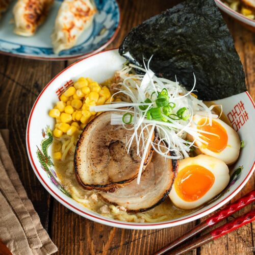

Click
here
to go back to Home
Ramen Cookbook

Prep: 10 mins Cook: 15 mins Total: 25 mins
Ingredients
For the Soup Broth
- 2 cloves garlic
- 1/2 tsp ginger
- 1 shallot
- 1 Tbsp toasted white sesame seed
- 1 Tbsp sesame oil
- 1/4 lb ground pork
- 1 tsp dou-ban-jiang (spicy chili bean paste)
- 3 Tbsp miso
- 1 Tbsp sugar
- 1 Tbsp sake
- 4 cups chicken stock/broth
- 1 tsp Diamond Crystal kosher salt (to taste)
- 1/4 tsp white pepper powder
For the Ramen
- 2 servings fresh ramen noodles (10–12 oz (283–340 g) fresh noodles or 6.3 oz (180 g) dry ramen noodles; for gluten-free, use GF ramen noodles)
For the Toppings (optional)
- Homemade Chashu (Japanese Braised Pork Belly)
- Ramen Egg (Ajitsuke Tamago)
- Spicy Bean Sprout Salad (or blanched bean sprouts)
- frozen or canned corn (drained)
- nori (dried laver seaweed) (1 sheet cut into quarters)
- green onion/scallion (thinly sliced)
- Shiraga Negi (julienned long green onions)
Before you start
Prepare all the ramen toppings ahead of time—so they‘re ready to serve with your hot bowl of ramen.
If you're making Homemade Chashu (Japanese Braised Pork Belly) and Ramen Egg (Ajitsuke Tamago), start a day in advance.
Gather all the ingredients.
To prepare Soup Ingredients
- Mince or press 2 cloves garlic (I use a garlic press) and add to a small plate. Then, grate the ginger (I use a ceramic grater) and add ½ tsp ginger (grated) to the plate.
- Mince 1 shallot and add to the plate. Set aside.
- Grind 1 Tbsp toasted white sesame seeds, leaving some unground for texture. Set aside.
To prepare Soup Broth
- Preheat a medium pot over medium-low heat. When it‘s hot, add 1 Tbsp toasted sesame oil and add the garlic, ginger, and shallot, and stir-fry with a wooden spatula until fragrant.
- Add ¼ lb ground pork and increase to medium heat. Cook until the meat is no longer pink.
- Add 1 tsp doubanjiang (spicy chili bean paste) and 3 Tbsp miso. Quickly blend with the meat without burning.
- Add the ground sesame seeds and 1 Tbsp sugar and mix well.
- Add 1 Tbsp sake and 4 cups chicken stock/broth, and bring the mixture to a simmer.
- Taste and add up to 1 tsp Diamond Crystal kosher salt and ¼ tsp white pepper powder. Cover the soup broth with the lid and keep it on a low simmer while you cook the noodles. Nami's Tip: Chicken stock varies in saltiness, so taste your soup to decide how much salt to add.
To prepare Ramen Noodles
- Bring a large pot of unsalted water to a boil. When the water is boiling, ladle some of the hot water into the ramen bowls to warm them. Meanwhile, gently shake 2 servings fresh ramen noodles with your hand to separate and loosen them.
- Cook the noodles according to the package instructions. I cook the noodles al dente so they're still firm, about 15 seconds less than the suggested cooking time. Before your noodles are done cooking, empty the hot water from the warmed ramen bowls.
- When the noodles are done, quickly pick them up with a mesh sieve and shake out the excess water. Serve them into the warmed bowls. Nami's Tip: Drain the noodles well so the cooking water doesn't dilute your soup.
Serve
- Add the hot ramen soup broth to each bowl.
- Place the toppings of your choice on the ramen noodles and serve immediately. I put blanched bean sprouts (or Spicy Bean Sprout Salad), frozen or canned corn, Shiraga Negi (julienned long green onions), Homemade Chashu (Japanese Braised Pork Belly), and Ramen Egg (Ajitsuke Tamago). Finally, I sprinkle thinly sliced green onion/scallion and insert a quarter sheet of nori (dried laver seaweed). At the table, add the optional condiments (la-yu (Japanese chili oil), pickled red ginger (beni shoga or kizami beni shoga), and white pepper powder), and enjoy.